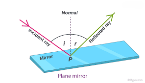
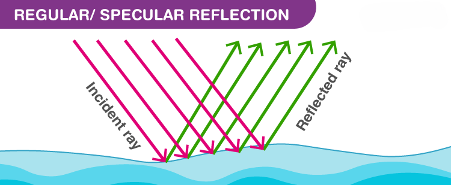
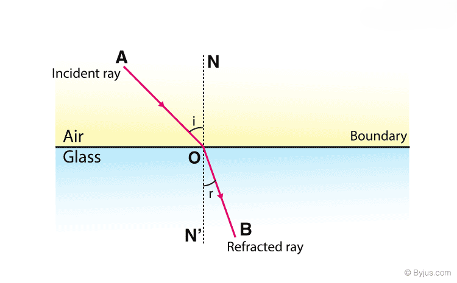

defination of reflection and refraction
REFLECTION :When a ray of light approaches a smooth polished surface and the light ray bounces back, it is called the reflection of light. The incident light ray that land on the surface is reflected off the surface. The ray that bounces back is called the reflected ray. If a perpendicular were drawn on a reflecting surface, it would be called normal. The figure below shows the reflection of an incident beam on a plane mirror.
Example:Mirrors: A person seeing their own image in a bathroom or
car mirror.
Water surfaces: A still pond or lake creating a clear image of the
sky and surrounding trees
REFRACTION:Refraction is the bending of a wave when it passes from one medium to another. The bending is caused due to the differences in density between the two substances.
Example:Examples of light refraction include a straw or pencil appearing bent when submerged in water, a rainbow forming in the sky, and a swimming pool looking shallower than it is
REFLECTION
laws of reflection
The laws of reflection determine the reflection of incident light rays on reflecting surfaces
, like mirrors, smooth metal surfaces and clear water. Let’s consider a plane mirror as shown
in the figure above. The law of reflection states that
1.Angle of incidence = Angle of reflection:
2.Plane of incidence: The incident ray,
the reflected ray, and the normal all lie in the same plane
Types of reflection of light
- Regular reflection is also known as specular reflection
- Diffused reflection
- Multiple reflection
Regular/Specular Reflection
Specular Reflection refers to a clear and sharp reflection, like the ones you get in a mirror. A mirror is made of glass coated with a uniform layer of a highly reflective material such as powder. This reflective surface reflects almost all the light incident on it uniformly. There is not much variation in the angles of reflections between various points. This means that the haziness and the blurring are almost entirely eliminated.
Diffused Reflection
Reflective surfaces other than mirrors, in general, have a very rough finish. This may be due to
wear and tear such as scratches and dents or dirt on the surface. Sometimes even the material
of which the surface is made of matters. All this leads to a loss of both the brightness and
the quality of the reflection.
In the case of such rough surfaces, the angle of reflection
when compared between points is completely haphazard. For rough surfaces, the rays incident at
slightly different points on the surface is reflected in completely different directions. This
type of reflection is called diffused reflection and is what enables us to see non-shiny objects.
Multiple Reflection
A single image is formed when an object is placed in front of a mirror. What happens if we use two mirrors? Since reflective surfaces such as mirrors are very good at preserving the intensity of light in a reflection, a single light source can be reflected multiple times. These multiple reflections are possible until the intensity of light becomes low to the point that we cannot see. This means that we can have almost infinite multiple reflections. We can also see an image in every individual reflection. This means that each image is the result of an image or an image of an image.
The number of images we see depends on the angle between the two mirrors. We see that as we go on decreasing the angle between the mirrors, the number of images increases. And when the angle becomes zero, i.e., when the mirrors become parallel, the number of images becomes infinite. This effect can be easily observed when your barber uses another smaller mirror to show you the back of your head. When this happens, not only do you see the back of your head, but you also see innumerable images of yourself. The variation of the number of images of an object placed between two mirrors with the angle between the mirrors can be described by a simple formula:
REFRACTION
Causes Of Refraction
Change of Speed Results in Change in Direction
A light ray refracts whenever it travels at an angle into a medium of different refractive indices. This change in speed results in a change in direction. As an example, consider air travelling into water. The speed of light decreases as it continues to travel at a different angle.
The refraction of light in glass is shown in the figure above. When light travels from air into glass, the light slows down and changes direction slightly. When light travels from a less dense substance to a denser substance, the refracted light bends more towards the normal line. If the light wave approaches the boundary in a perpendicular direction, the light ray doesn’t refract despite the change in speed.
Laws of Refraction of Light
Laws of refraction state that:
- The incident ray refracted ray, and the normal to the interface of two media at the point of incidence all lie on the same plane
- The ratio of the sine of the angle of incidence to the sine of the angle of refraction is constant. This is also known as Snell’s law of refraction
sin i/sin r = constant
What Is The Refractive Index
The refractive index, also called the index of refraction, describes how fast light travels through the material
The refractive Index is dimensionless. For a given material, the refractive index is the ratio between the speed of light in a vacuum (c) and the speed of light in the medium (v). If the refractive index for a medium is represented by n, then it is given by the following formula
n = e/v
Based on the refractive index of the medium, the light ray changes its direction, or it bends at the junction separating the two media. If the light ray travels from one medium to another of a higher refractive index, it bends towards the normal, else it bends away from the normal.
Refraction of light in real life
- Mirage and looming are optical illusions resulting from refraction of light.
- A swimming pool always looks shallower than it really is because the light coming from the bottom of the pool bends at the surface due to refraction of light
- Formation of a rainbow is an example of refraction as the sun rays bend through the raindrops resulting in the rainbow
Applications Of Refraction Of Light
- A lens uses refraction to form an image of an object for various purposes, such as magnification
- Spectacles worn by people with defective vision use the principle of refraction
- Refraction is used in peepholes of house doors, cameras, movie projectors and telescopes.
Solved Problems on Refraction
1.Light travelling in air enters into an optical fibre of refractive index 1.44
- (a)In which direction does the light bend?
- (b)If the angle of incidence on one end of the fibre is 22o, then what is the angle of refraction?
solution:
(a)The light travels from a rarer medium(air) to a denser medium(optical fibre). Hence the
refracted ray will bend towards the normal
(b) The angle of refraction can be calculated as follows:
Let air be medium 1 and optical fibre be medium 2. Therefore, n1 = 1.00, n2 = 1.44,
and θ1= 22o
Now, substituting the values in the equation as follows:
(1.00) sin 22o = 1.44 sin θ2.
sin θ2 = (1.00/1.44) sin 22o = 0.260
θ2 = sin-1 (0.260) = 15o
2.The light travelling through the optical fibre reaches the end of the optical fibre and exits into the air. If the angle of incidence at the end of the tube is 30o. Then what would the angle of refraction outside the fibre be?
solution:
Let the fibre be medium 1 and air medium 2. Therefore, n1 = 1.44, n2 = 1.00, and θ,1 = 30o. Substituting
the values in the equation, we get
(1.44) sin 30o = 1.00 sin θ2
sin θ2 = (1.44/1.00) sin 30o = 1.44 (0.500) = 0.720
θ2 = sin-1 (0.720) = 46o
This time we notice that the angle of refraction is larger than the angle of incidence. This indicates that the
light is bending away from the normal as it enters a rarer material.
Frequently Asked Questions - FAQ's
Refraction
(q1) Define Refraction
The change in the direction of a wave when it passes from one medium to another is known as refraction
(Q2)When does refraction of waves occur?
The refraction of light occurs when a light wave, incident at an angle away from the normal, passes a boundary from one medium into another in which there is a change in velocity of the light
(Q3)When is the refraction of light not possible?
When the incident light is perpendicular to the boundary, refraction of light is not possible
(Q4)What is the difference between reflection and refraction in the light?
Reflection of light is when the light bounces off a medium. If the medium has a smooth surface, then the angle of incidence is equal to the angle of reflection. Refraction of light is the change in the direction of light as it passes from one medium to another.
(Q5)State an example of refraction of light.
An example of refraction is the rainbow. The light rays bend as they enter water drops in the atmosphere forming a rainbow
(Q6)Define light.
Light is a form of energy that enables us to see things. Light starts from a source and bounces off objects which are perceived by our eyes and our brain processes this signal, which eventually enables us to see
(Q7)Give a daily life example of refraction of light.
Twinkling of stars and the formation of a rainbow.
(Q8)What is the difference between reflection and refraction of light?
Reflection of light is when the light bounces off a medium. If the medium has a smooth surface, then the angle of incidence is equal to the angle of reflection. Refraction of light is the change in the direction of light as it passes from one medium to another
(Q9)What is refractive index?
The refractive index is the measure of the bending of a light ray when it passes from one medium to another. It can also be defined as the ratio of the velocity of a light ray in an empty space to the velocity of light in a substance, n = c/v
(Q10)What is dispersion of light?
When white light is passed through a glass prism it splits into its spectrum of colours (in order violet, indigo, blue, green, yellow, orange and red) and this process of white light splitting into its constituent colours is termed as dispersion
(Q11)What is reflection of light?
When a ray of light approaches a smooth polished surface and the light ray bounces back, it is called the reflection of light. The incident light ray that lands on the surface is reflected off the surface. The ray that bounces back is called the reflected ray
(Q12)What are the types of reflection of light?
Types of reflection of light are:
- Regular reflection/specular reflection
- Diffused reflection
- Multiple reflection
(Q13) Define Optics
Optics is the branch of physics which is concerned with light and its behavioural pattern and properties.
(Q14)What is wave optics in physics?
Wave optics is the branch of optics that studies the diffraction, interference, polarisation, and other phenomena for which the ray approximation of geometric optics is not valid.
(Q15)What is total internal reflection?
The phenomenon which occurs when the light rays travel from a more optically denser medium to a less optically denser medium is known as total internal reflection.
Reflection
(Q1)What is meant by reflection of light?
When a light ray approaches a smooth polished surface and the light ray bounces back, it is known as the reflection of light
(Q2)What is interference?
Interference is the phenomenon in which two waves superpose to form the resultant wave of the lower, higher or same amplitude.
(Q3)State the laws of reflection?
Coherent sources should have the following characteristics:
The incident ray, the reflected ray and the normal all lie in the same plane.
The angle of incidence is equal to the angle of reflection
(Q4)What are the types of reflection of light?
Types of reflection of light are:
Regular reflection/specular reflection
Diffused reflection
Multiple reflection
(Q5)Which type of reflection results in a clear and sharp reflection?
Specular or regular reflection produces a clear and sharp reflection.